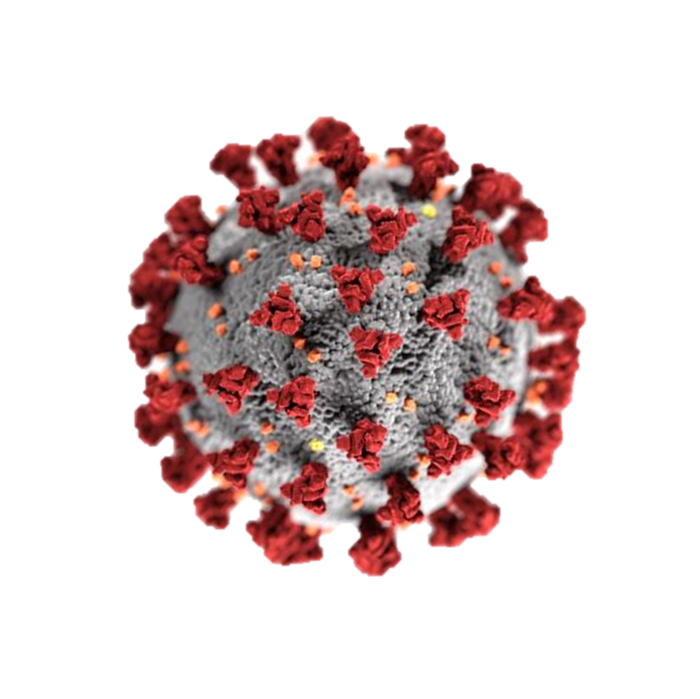

library(medicaldata) #load the medical data package
library(dplyr) # to change data to tibble
data("covid_testing")
covid_testing <- as_tibble(covid_testing) # I prefer to have my data as a tibbleMini Project - R For Health Sciences Workshop
Analysing COVID-19 Testing Data

The covid 19 pandemic - caused by the “severe acute respiratory syndrome corona-virus 2”-, declared a global crisis by WHO (world health organisation) in March 2020, profoundly impacted communities worldwide. Although vaccines have been developed to counter the virus’ action, it is still considered a pandemic till date. It is therefore critical to understand its dynamics, and assessing testing strategies becomes vital for effective public health management.
In this project we delve into the rich landscape of COVID-19 testing data. By analysing demographic, clinical, and laboratory variables, we aim to reveal patterns, identify risk factors and enhance our understanding of the disease. Through data driven insights, we hope to contribute to better decision making, resource allocation and targeted interventions
Loading The Data for Analysis
For this work we use the covid_testing dataset found in the medicaldata package. More information on the data can be found here. All the variables in the dataset are also defined on this page: Variables description for covid_testing data . You can also type help(covid_testing) for locally stored information on the data in RStudio
# Install medicaldata package if you have not
install.packages("medicaldata") #this is done only onceExploring the Data
We can now check how the data looks like, the structure and dimensions, Identify some key variables and check for missing values.
library(skimr) # to summarise data in a tabular form
head(covid_testing) # check few rows from top of data# A tibble: 6 × 17
subject_id fake_first_name fake_last_name gender pan_day test_id clinic_name
<dbl> <chr> <chr> <chr> <dbl> <chr> <chr>
1 1412 jhezane westerling female 4 covid inpatient wa…
2 533 penny targaryen female 7 covid clinical lab
3 9134 grunt rivers male 7 covid clinical lab
4 8518 melisandre swyft female 8 covid clinical lab
5 8967 rolley karstark male 8 covid emergency de…
6 11048 megga karstark female 8 covid oncology day…
# ℹ 10 more variables: result <chr>, demo_group <chr>, age <dbl>,
# drive_thru_ind <dbl>, ct_result <dbl>, orderset <dbl>, payor_group <chr>,
# patient_class <chr>, col_rec_tat <dbl>, rec_ver_tat <dbl>glimpse(covid_testing) # check structureRows: 15,524
Columns: 17
$ subject_id <dbl> 1412, 533, 9134, 8518, 8967, 11048, 663, 2158, 3794, 4…
$ fake_first_name <chr> "jhezane", "penny", "grunt", "melisandre", "rolley", "…
$ fake_last_name <chr> "westerling", "targaryen", "rivers", "swyft", "karstar…
$ gender <chr> "female", "female", "male", "female", "male", "female"…
$ pan_day <dbl> 4, 7, 7, 8, 8, 8, 9, 9, 9, 9, 9, 9, 9, 9, 9, 10, 10, 1…
$ test_id <chr> "covid", "covid", "covid", "covid", "covid", "covid", …
$ clinic_name <chr> "inpatient ward a", "clinical lab", "clinical lab", "c…
$ result <chr> "negative", "negative", "negative", "negative", "negat…
$ demo_group <chr> "patient", "patient", "patient", "patient", "patient",…
$ age <dbl> 0.0, 0.0, 0.8, 0.8, 0.8, 0.8, 0.8, 0.0, 0.0, 0.9, 0.9,…
$ drive_thru_ind <dbl> 0, 1, 1, 1, 0, 0, 1, 0, 1, 1, 1, 0, 0, 1, 1, 1, 1, 0, …
$ ct_result <dbl> 45, 45, 45, 45, 45, 45, 45, 45, 45, 45, 45, 45, 45, 45…
$ orderset <dbl> 0, 0, 1, 1, 1, 0, 1, 1, 1, 1, 0, 1, 0, 1, 1, 1, 1, 1, …
$ payor_group <chr> "government", "commercial", NA, NA, "government", "com…
$ patient_class <chr> "inpatient", "not applicable", NA, NA, "emergency", "r…
$ col_rec_tat <dbl> 1.4, 2.3, 7.3, 5.8, 1.2, 1.4, 2.6, 0.7, 1.0, 7.1, 2.5,…
$ rec_ver_tat <dbl> 5.2, 5.8, 4.7, 5.0, 6.4, 7.0, 4.2, 6.3, 5.6, 7.0, 3.8,…skim(covid_testing) # summarise data in a tabular form| Name | covid_testing |
| Number of rows | 15524 |
| Number of columns | 17 |
| _______________________ | |
| Column type frequency: | |
| character | 9 |
| numeric | 8 |
| ________________________ | |
| Group variables | None |
Variable type: character
| skim_variable | n_missing | complete_rate | min | max | empty | n_unique | whitespace |
|---|---|---|---|---|---|---|---|
| fake_first_name | 0 | 1.00 | 3 | 13 | 0 | 832 | 0 |
| fake_last_name | 0 | 1.00 | 4 | 11 | 0 | 27 | 0 |
| gender | 0 | 1.00 | 4 | 6 | 0 | 2 | 0 |
| test_id | 0 | 1.00 | 5 | 5 | 0 | 2 | 0 |
| clinic_name | 0 | 1.00 | 3 | 32 | 0 | 88 | 0 |
| result | 0 | 1.00 | 7 | 8 | 0 | 3 | 0 |
| demo_group | 0 | 1.00 | 6 | 12 | 0 | 5 | 0 |
| payor_group | 7087 | 0.54 | 5 | 18 | 0 | 7 | 0 |
| patient_class | 7077 | 0.54 | 9 | 23 | 0 | 9 | 0 |
Variable type: numeric
| skim_variable | n_missing | complete_rate | mean | sd | p0 | p25 | p50 | p75 | p100 | hist |
|---|---|---|---|---|---|---|---|---|---|---|
| subject_id | 0 | 1.00 | 5570.65 | 3613.70 | 1.00 | 2329.75 | 5268.0 | 8636.25 | 12346.0 | ▇▆▆▆▅ |
| pan_day | 0 | 1.00 | 63.21 | 27.22 | 4.00 | 38.00 | 65.0 | 87.00 | 107.0 | ▃▇▆▇▇ |
| age | 0 | 1.00 | 14.19 | 16.47 | 0.00 | 2.00 | 9.0 | 18.00 | 138.0 | ▇▁▁▁▁ |
| drive_thru_ind | 0 | 1.00 | 0.51 | 0.50 | 0.00 | 0.00 | 1.0 | 1.00 | 1.0 | ▇▁▁▁▇ |
| ct_result | 209 | 0.99 | 44.12 | 3.98 | 14.05 | 45.00 | 45.0 | 45.00 | 45.0 | ▁▁▁▁▇ |
| orderset | 0 | 1.00 | 0.70 | 0.46 | 0.00 | 0.00 | 1.0 | 1.00 | 1.0 | ▃▁▁▁▇ |
| col_rec_tat | 0 | 1.00 | 7.22 | 492.82 | 0.00 | 0.70 | 1.9 | 3.60 | 61370.2 | ▇▁▁▁▁ |
| rec_ver_tat | 0 | 1.00 | 5.64 | 5.09 | -18.60 | 4.00 | 5.0 | 6.20 | 218.2 | ▇▁▁▁▁ |
# look at some key variables in data
unique(covid_testing$result) # test results[1] "negative" "positive" "invalid" unique(covid_testing$demo_group) # demographics of tested groups[1] "patient" "client" "other adult" "misc adult" "unidentified"unique(covid_testing$payor_group) # payor groups[1] "government" "commercial" NA
[4] "unassigned" "medical assistance" "self pay"
[7] "other" "charity care" unique(covid_testing$test_id) # type of test performed[1] "covid" "xcvd1"unique(covid_testing$patient_class) # patients' classifications [1] "inpatient" "not applicable"
[3] NA "emergency"
[5] "recurring outpatient" "observation"
[7] "outpatient" "day surgery"
[9] "admit after surgery-ip" "admit after surgery-obs"# check for missing values
sum(is.na(covid_testing)) # total missing values[1] 14373colSums(is.na(covid_testing)) # missing values by column subject_id fake_first_name fake_last_name gender pan_day
0 0 0 0 0
test_id clinic_name result demo_group age
0 0 0 0 0
drive_thru_ind ct_result orderset payor_group patient_class
0 209 0 7087 7077
col_rec_tat rec_ver_tat
0 0 From our exploration we clearly see how the data is structured. There are a total of 15524 observations, which is the number of tests conducted (number of rows) and 17 variables (number of columns) of which 9 are character type and 8 are numeric type. The search also reveals some missing values in our data. A total of 14373 missing values are identified, 7087 are under the payor_group variable, 7077 under the patient_class variable and 209 under the ct_result variable. We also take a look at some key variables (character) and their unique observational values, for instance the result variable has 3 unique observations; positive, negative and invalid
Cleaning the Data
For the cleaning we shall only look at the result column. We want to filter out all results with an invalid observation or outcome. We can additionally deal with the missing values by making some imputations but that is beyond the scope of this lesson. So we leave the missing values as they are for now.
# filter out invalid test results using dplyr filter
covid_test_clean <- covid_testing |> filter(result != "invalid")
head(covid_test_clean) # top few rows of cleaned data# A tibble: 6 × 17
subject_id fake_first_name fake_last_name gender pan_day test_id clinic_name
<dbl> <chr> <chr> <chr> <dbl> <chr> <chr>
1 1412 jhezane westerling female 4 covid inpatient wa…
2 533 penny targaryen female 7 covid clinical lab
3 9134 grunt rivers male 7 covid clinical lab
4 8518 melisandre swyft female 8 covid clinical lab
5 8967 rolley karstark male 8 covid emergency de…
6 11048 megga karstark female 8 covid oncology day…
# ℹ 10 more variables: result <chr>, demo_group <chr>, age <dbl>,
# drive_thru_ind <dbl>, ct_result <dbl>, orderset <dbl>, payor_group <chr>,
# patient_class <chr>, col_rec_tat <dbl>, rec_ver_tat <dbl>The code above is filtering all the data on the condition where the result variable is not invalid. The “!=” sign means not equal.
Manipulating the Data using dplyr Functions
To uncover some insights to help our visualisation. We need to do some manipulations on our data to help make certain patterns seem clearer and easily understood. We shall filter the data to focus on some specific groups (character variables) and make summary calculations (on the numeric variables) based on these groups.
library(tidyr) # for tidying data
# Group by demo group and calculate average ct_result for positive cases
positive_cases_demo <- covid_test_clean |> filter(result == 'positive') |>
group_by(demo_group) |>
summarise(avg_ct_result = mean(ct_result, na.rm = TRUE))
print(positive_cases_demo)# A tibble: 4 × 2
demo_group avg_ct_result
<chr> <dbl>
1 client 31.3
2 misc adult 28.2
3 other adult 27.0
4 patient 29.8# Group by demo groups and summarise positivity rate
demo_summary <- covid_test_clean |>
group_by(demo_group) |>
summarise(total_tests = n(),
positive_tests = sum(result == "positive"),
positivity_rate = round(positive_tests/total_tests, 2))
print(demo_summary)# A tibble: 5 × 4
demo_group total_tests positive_tests positivity_rate
<chr> <int> <int> <dbl>
1 client 579 81 0.14
2 misc adult 2376 232 0.1
3 other adult 216 8 0.04
4 patient 12051 544 0.05
5 unidentified 1 0 0 # Summarize average turnaround times for different patient classes
turnaround_times <- covid_test_clean |>
group_by(patient_class) |> drop_na() |>
summarise(avg_col_rec_tat = mean(col_rec_tat, na.rm = TRUE),
avg_rec_ver_tat = mean(rec_ver_tat, na.rm = TRUE))
print(turnaround_times)# A tibble: 9 × 3
patient_class avg_col_rec_tat avg_rec_ver_tat
<chr> <dbl> <dbl>
1 admit after surgery-ip 1.35 3.82
2 admit after surgery-obs 0.8 3
3 day surgery 0.910 4.86
4 emergency 0.856 5.24
5 inpatient 1.61 5.34
6 not applicable 3.24 5.49
7 observation 0.866 6.21
8 outpatient 71.0 6.70
9 recurring outpatient 1.30 5.22# Calculate average ct_result for positive cases
average_ct_result <- covid_test_clean |>
filter(result == "positive") |>
summarise(average_ct = mean(ct_result, na.rm=T))
print(average_ct_result)# A tibble: 1 × 1
average_ct
<dbl>
1 29.5These manipulations gives us some insight into our data which can instigate further statistical analysis to determine some association and correlations within the data for decision making. We can further visualise the data to view these perceptions clearly in a plot.
Making Visualisations with the Data
We can make plots like bar chats, line plots, box plots and various others with our data to further enhance our perceptions about our data.
library(ggplot2) # load package for visualisation
# bar plot of positivity rate v demo group
ggplot(data = demo_summary, aes(x = demo_group, y = positivity_rate)) +
geom_col(fill = "turquoise", colour = 'black') +
labs(title = "Positivity Rate by Demographic Group",
x = "Demographic Group",
y = "Positivity Rate") +
theme_bw()
# A scatter plot of turnaround times by patient class
ggplot(turnaround_times, aes(x = avg_col_rec_tat, y = avg_rec_ver_tat, color = patient_class)) +
geom_point(size = 3, show.legend = F) +
labs(x = "Avg Collection to Receipt Time", y = "Avg Receipt to Verification Time",title = "Turnaround Times for Different Patient Classes") +
theme_bw()
# A histogram showing the distribution of cycle threshold for positive cases
covid_test_clean |> filter(result == "positive" & !is.na(ct_result)) |>
ggplot(aes(x = ct_result)) +
geom_histogram(binwidth = 1.5, fill = "orange", colour = 'black') +
labs(title="Cycle Threshold DIstribution",
x="Cycle threshold (ct_result)",
y="Count") +
theme_classic()
# A line trend of postive cases over the days of testing
ggplot(covid_test_clean %>% filter(result == "positive"), aes(x = pan_day)) +
geom_line(stat = 'count', colour = 'navy') +
labs(title = "Trend of Positive COVID-19 Cases Over Time",
x = "Collection Date",
y = "Count of Positive Results") +
theme_classic()
# A box plot to show the distribution of ages in different demo groups
ggplot(covid_test_clean %>% filter(result == "positive"), aes(x = demo_group, y = age)) +
geom_boxplot(aes(fill = demo_group), show.legend = F) +
labs(title = "Distribution of Ages (ct_result) by Demographic Group",
x = "Demographic Group",
y = "Age") +
theme_bw()
The above visualisations gives us a clear picture into the dynamics of how the various variables are interacting with each other and distinctly communicate these insights from the data.
……
Conclusion
To conclude, this mini project has allowed us to:
Practice real-world data analysis with a COVID-19 testing data set.
Explore patterns in COVID-19 testing results data.
Create meaningful visualizations to communicate findings.